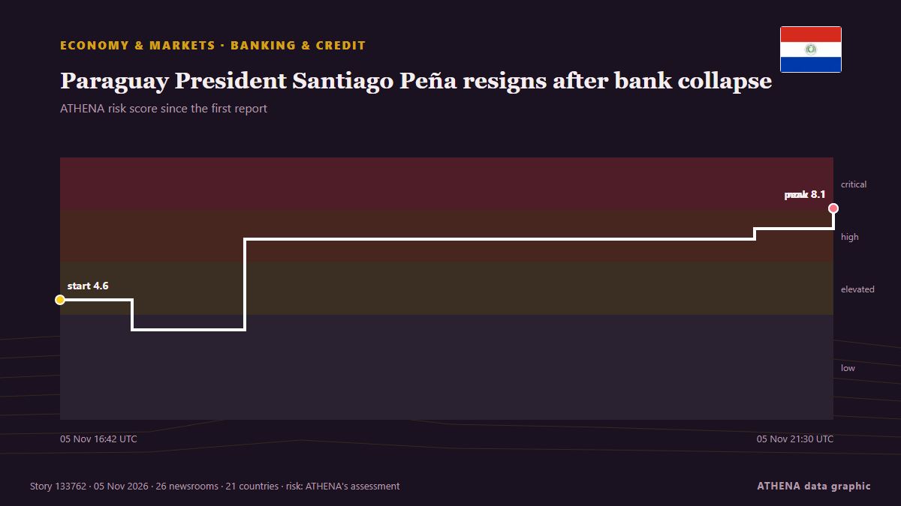

Wirtschaft
Weltwirtschaft heute
Letzte 24 Stunden — Ereignisse: 72, Länder: 38. Höchstes Risiko jetzt: 8.2 — Paraguay President Santiago Peña resigns after bank collapse.

Wirtschaft und MärkteParaguay President Santiago Peña resigns after bank collapse
The move follows a bank collapse and after the lower house of congress voted in favour of pursuing an impeachment trial against him. von BBC News
| 24. Okt. | 2 |
|---|---|
| 25. Okt. | 12 |
| 26. Okt. | 50 |
| 27. Okt. | 42 |
| 28. Okt. | 47 |
| 29. Okt. | 47 |
| 30. Okt. | 52 |
| 31. Okt. | 21 |
| 1. Nov. | 23 |
| 2. Nov. | 58 |
| 3. Nov. | 52 |
| 4. Nov. | 35 |
| 5. Nov. | 34 |
| 6. Nov. | 0 |
Tracker
Neueste
Barclays bank to cut about 5,000 jobs amid AI drive
LONDON: British bank Barclays announced Thursday plans to cut around 5,000 jobs, or roughly five percent of its global workforce, by the end of 2026 in an AI efficiency drive. von Business Recorder
Bank Negara holds fire on OPR, hike still in play [WATCH]
KUALA LUMPUR: Bank Negara Malaysia may be nearing a turning point in its monetary policy as stronger economic growth fuels calls to normalise interest rates after a prolonged period of support for… von New Straits Times
Israel kills Palestinian in Gaza, seizes eight homes in occupied West Bank
Israeli attacks target several areas of Gaza as Palestinian authorities report new homes and more than 620 acres of land near Ramallah seizures in occupied West Bank. von TRT World
US Fed holds interest rates steady despite 'too high' inflation
The US Federal Reserve is expected to keep interest rates unchanged in its upcoming meeting next week. von Times of India
Jordan's king says 'no security or stability' in region without Palestinian homelan
Jordan’s King Abdullah II on Monday said there would be no security in the Middle East region until the Palestinians’ right to a homeland is fulfilled. von Hespress English
French bank Credit Mutuel Arkea says €100 million missing after cyberattack
The French bank has not confirmed its alleged involvement in the crypto theft, which ZachXBT said could have resulted in losses exceeding $133 million. von Cointelegraph
Disney plans thousands of layoffs as managers asked to cut costs by 20%
California: Walt Disney is considering cutting thousands of jobs as the entertainment giant seeks to reduce costs, with some managers asked to identify annual savings of 20 per cent, Bloomberg… von Gulf News
Fed holds main interest rate steady despite accelerating inflation
Two policymakers on the Federal Open Market Committee dissented in favor of raising the federal funds rate by 0.25 percentage point. von Supply Chain Dive
Shadab heroics lift Pakistan past England
Pakistan all-rounder Shadab Khan struck an unbeaten 113 and shared a record 89-run last-wicket stand with Haris Rauf as the hosts rallied from 154-9 to secure a one-wicket win... von Oman Observer
Australia hikes rates to 18-year high to fight inflation
The Reserve Bank of Australia's decision was in line with expectations from economists polled by Reuters, and marked its fifth rate increase this year. von CNBC World
African players in Europe: Jackson brace ends City’s perfect record
AFP Sport highlights African headline-makers in the major European leagues last week. von Free Malaysia Today
Sinner to play in Six Kings Slam in Riyadh at end of December - report
(ANSA) - ROME, 26 OTT - Jannik Sinner will make his comeback from a long layoff with a knee injury at the end of December at the Six Kings Slam event in Riyadh, Saudi Arabia, Supertennis, the TV… von ANSA English